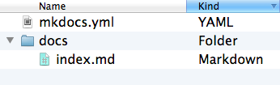

开始使用 MkDocs
入门教程!
安装
要安装 MkDocs，请从命令行运行以下命令：
pip install mkdocs
更多详细信息, 请参阅 安装指南.
创建新项目
入门非常简单。若要创建新项目，请在命令行界面中的运行以下命令：
mkdocs new my-project
cd my-project
花点时间查看为你创建的初始项目。

有一个名称为mkdocs.yml的配置文件，以及一个名称为docs的文件夹，该文件夹将包含您的文档源文件 （docs是docs_dir配置设置的默认值）。现在，docs文件夹仅包含一个名为 index.md 的文档页面。
MkDocs 带有一个内置的开发服务器，可让您预览文档 当你在工作时。请确保您与配置文件 mkdocs.yml 位于同一目录中，然后通过运行mkdocs serve命令启动服务器：mkdocs serve
$ mkdocs serve
INFO - Building documentation...
INFO - Cleaning site directory
INFO - Documentation built in 0.22 seconds
INFO - [15:50:43] Watching paths for changes: 'docs', 'mkdocs.yml'
INFO - [15:50:43] Serving on http://127.0.0.1:8000/
在浏览器中打开 http://127.0.0.1:8000/ ，您将看到正在显示的默认主页：

开发服务器还支持自动重新加载，并将重新构建您的文档 只要配置文件、文档目录或主题中的任何内容 目录更改。
在您选择的文本编辑器中打开 docs/index.md 文档，将初始标题为MkLorum ，然后保存更改。您的浏览器将 自动重新加载，您应该会立即看到更新的文档。docs/index.md
现在尝试编辑配置文件mkdocs.yml：。将site_name设置更改为MkLorum并保存文件。
site_name: MkLorum
site_url: https://example.com/
您的浏览器应立即重新加载，并且您将看到您的新网站名称效果。

注意:
site_name和site_url配置 选项是配置文件中唯一必需的两个选项。什么时候 创建新项目时，为该选项分配了site_url占位的默认值：https://example.com。如果最终位置已知，您可以更改 现在设置指向它。或者你可以选择暂时不去管它。 请务必在将站点部署到生产服务器之前对其进行编辑。
添加页面
现在向文档添加第二页：
curl 'https://jaspervdj.be/lorem-markdownum/markdown.txt' > docs/about.md
由于我们的文档网站将包含一些导航标题，因此您可能需要 编辑配置文件并添加有关订单、标题和 通过添加导航设置在nav页眉中嵌套每个页面：
site_name: MkLorum
site_url: https://example.com/
nav:
- Home: index.md
- About: about.md
保存更改，您现在将看到一个导航栏带有，左侧显示Home 和 About 项，以及Search, Previous和 Next。

尝试菜单项并在页面之间来回导航。然后点击Search .将出现一个搜索对话框，允许您搜索任何文本 任何页面。请注意，搜索结果包括搜索的每次匹配项 网站上的术语，并直接链接到页面的部分，其中 此时将显示搜索词。您无需任何努力或配置即可获得所有这些部分。

为我们的文档设置主题
现在更改配置文件以更改文档的显示方式 更改主题。
编辑mkdocs.yml文件并添加theme设置：
site_name: MkLorum
site_url: https://example.com/
nav:
- Home: index.md
- About: about.md
theme: readthedocs
保存更改，您将看到正在使用的 ReadTheDocs 主题。

更换Favicon图标
默认情况下，MkDocs 使用 MkDocs favicon 图标。要使用其他图标，请在 docs 目录中创建子目录img，然后将自定义favicon.ico文件复制到该目录。MkDocs 将自动检测并将该文件用作您的 图标图标。
构建网站
这看起来不错。你已准备好部署MkLorum文档的第一步。首先构建文档：
mkdocs build
这将创建一个名为 site 的新目录。看看里面 目录：
$ ls site
about fonts index.html license search.html
css img js mkdocs sitemap.xml
Notice that your source documentation has been output as two HTML files named
index.html and about/index.html. You also have various other media that's
been copied into the site directory as part of the documentation theme. You
even have a sitemap.xml file and mkdocs/search_index.json.
If you're using source code control such as git you probably don't want to
check your documentation builds into the repository. Add a line containing
site/ to your .gitignore file.
echo "site/" >> .gitignore
If you're using another source code control tool you'll want to check its documentation on how to ignore specific directories.
其他命令和选项
还有各种其他命令和选项可用。有关完整列表 命令，使用--help标志：
mkdocs --help
To view a list of options available on a given command, use the --help flag
with that command. For example, to get a list of all options available for the
build command run the following:
mkdocs build --help
部署文档
The documentation site that you just built only uses static files so you'll be
able to host it from pretty much anywhere. Simply upload the contents of the
entire site directory to wherever you're hosting your website from and
you're done. For specific instructions on a number of common hosts, see the
Deploying your Docs page.
获得帮助
有关 MkDocs 所有功能的更完整文档，请参阅用户指南。
要获得有关 MkDocs 的帮助，请使用 GitHub discussions 或 GitHub issues。